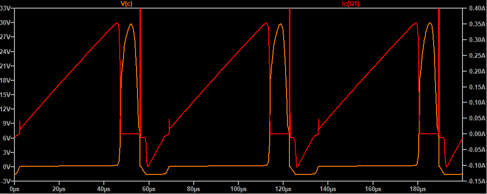
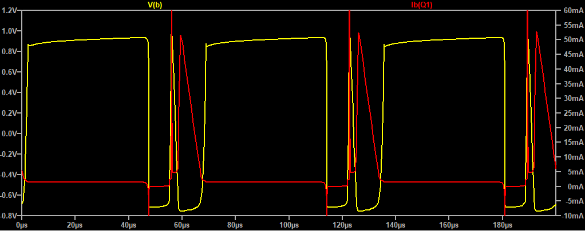

High Voltage Insect Zapper
This is one of those simple circuits for which can be found a lot of very poor explanations. I took one apart and did a simple analysis--now I have the feeling that I have something to say about it. In fact, I have determined empirically that I have far too much to say about it.
Initial Measurements
The first thing that we do is to measure the output voltage. To get a general idea of what might be expected, it is useful to remember that the dielectric strength of air is around 3kV per mm. The electrode screens on the device are separated by a couple millimeters, and no arcing occurs spontaneously so we aren't dealing with 10's of thousands of volts. But a value of a couple thousand would not be suprising. Since we don't want to try to measure anything bigger than 1000V with the multimeter, we add a 1Meg resistor in series with the 10Meg load resistor. Measuring across the 1Meg resistor shows a voltage of 165V--ignoring internal resistance of the DMM for the foreseeable future--the full output voltage is around 1.8kV.
Schematic Extraction
The next step in understanding this device is extracting a schematic representation from the physical circuit. This is no big deal, and can be accomplished readily using a combination of visual inspetion, resistance measurements, and diode drop measurements. Just looking at the PCB inside of one of these devices (purchased from Harbor Freight) reveals three important parts of the circuit: (1) Some type of transformer with 5 pins, (2) Some type of 3 terminal TO-92 package device -- revealed to be an npn transistor upon reading its label, and (3) A string of capacitors and diodes which is clearly a voltage multiplier.
Digression on the Transformer
This section is kind of long -- you can go ahead and skip to the simulation section if you don't care about my transformer journey. Also if you are a mathematician, my "calculations" might appear appallingly crude. In my defense, I had no measurement tools other than my eyes available when I did this analysis. Nevertheless, we procede.
Just by looking, we can see how all these parts are connected. Though we don't know the configuration of the transformer yet, we know that it has the following pin connections: one directly to the 3V supply, one to the 3V supply through a 3k3 resistor, one to the first capacitor of the voltage multiplier, and two to the transistor. Next, using the multimeter to measure the transformer's pin to pin resistances, we are futher able to determine a probable configuration. Below is a summary of those measurements:
This doesn't mean a whole lot on its own, but combined with physical measurements of the core and knowledge of the resistivity of the wire used, we can estimate the length of the wires making up each coil, and thus the number of turns, and the inductance.
The coils between pins 3 and 4, and pins 1 and 5 appear to be wound with the same wire, which to me looks to be no smaller than 30AWG or so. The other coil, between 3 and 2 is unfortunately too hard to see from the outside, so I can't tell. But we can use other aspects of the transformer geometry to determine what we have.
Let's assume that most of the volume of the transformer windings is taken up by the 250 ohm winding, and further that the ratio of copper to empty space is the ratio of the area of a circle with diameter a to a square with side length a, that is pi/4. This is the approximate situation:
Where:
\[V_{copper} \approx l \cdot(W^2 - W_c^2)\cdot\frac{\pi}{4}\]The length of the copper wire can be determined if the cross sectional area is known:

with
\[L = \frac{V}{A}\]And with resistance defined as:
\[R = \rho \frac{L}{A}\]Combining the second two equations gives R in terms of V and A. Expressing V in terms of the coil and core geometry yields an expression for A:
\[R = \rho \frac{V/A}{A} = \rho \frac{V}{A^2} = \rho \frac{\pi l\cdot (W^2 - W_c^2)}{4 A^2}\] \[\therefore A = \sqrt{\frac{\rho \pi l \cdot(W^2-W_c^2)}{4 R}}\]Further, an expression for the diameter of the wire can be obtained:
\[D = \left [ \frac{4 \rho l \cdot(W^2-W_c^2)}{\pi R}\right ]^{1/4}\]That's nice, but it's probably a better idea to just make a matlab script that defines all these relationships. With the following short script, we can determine (among other things) the approximate values for wire gauge, number of turns and inductance:

Note that I totally guessed the relative permeability of the ferrite core -- it could be anything from like 20 up to several hundred. At any rate, this gives us an approximate wire gauge of 43AWG, a turn count of like 1500, and an inductance of like 750mH. There is a lot that can make this not true -- but it at least gives us an idea that the inductance of that coil is in the 100s of mH range, to maybe several Henries.
The other coils then, which appear to be made of the same wire gauge, with the same series resistance, must have a similar number of turns. Now, for an increase in AWG # by 10, the increase in resistance is also 10. That's approximately a 26% increase in resistance per AWG. This means 43 AWG should have a resistance approximately 20 times that of 30AWG. Since 43 AWG wire has about 2 ohms per foot resistance, 30AWG is expected to have around 100m ohms for the same length. Since the mean coil length is near an inch, that translates to 12 or so turns for every 100m ohms. This implies 60 turns if we are to trust our 500m ohm resistance measuremnt... which I don't. I assume we have more like 10 or low 10s of turns. At any rate, that gives an inductance range from like 30uH to 1mH.
Note that I am ignoring any nonlinearity of the core material, which is generally unwise. But remember, All we are trying to do at this point is investigate why this thing works -- if it turns out that the simulation doesn't work, it is likely that transformer saturation is necessary to operation. More on this later.
The Transistor
Lucky for us, the transistor had a legible lable on it -- however, we could have determined its pinout by measuring diode drops between pins, assuming none of the other diodes on board were connected in any way that could cause deception. By looking at the device datasheet, it is clear that some behavior deviates from the SPICE default NPN transistor. Now, I could go into another digression about this, but I don't want to do that exactly. Suffice to say that the important parameters were the forward current gain, BE and CB capacitance, early voltage and high current beta roll off. Anyway, in the next section is a picture of the LT Spice schematic, showing how the switch is actually connected.
Spice Simulation

I have used a coupled inductor transformer model here, which assumes perfect coupling and no core losses--high and low estimated inductor values were chosen for a stepped simulation to observe sensitivity to these values. Copper losses are represented as the measured series resistances, specified for each inductor instance. A more detailed simulation with a nonideal saturable transformer model will show up sooner or later. Also, I added D5 because it is irresponsible to allow EB breakdown. A transient simulation showing the high voltage output is right here below:
Red: L1=50u, L2=200m; Orange: L1=500u, L2=200m; Yellow: L1=50u, L2=2; Green: L1=500u, L2=2
A couple things to notice: L1 (primary inductance, as well as the first tap inductance of the secondary), has a strong effect on the oscillating frequency, and a relatively weak effect on output voltage (factor of 10 change in L gives 10-20% change in output voltage). The value of L2 seems to have a similarly week effect on the output voltage. Ok... so how does this thing oscillate?
Explanation
Let's fix the inductor values and observe terminal voltages and currents. Below is a transient simulation showing just collector voltage and current, and below that is the same for the base:

The smart thing to do is to recognize 4 time intervals: (1) switch open (2) switch closing (3) switch closed (4) switch opening. The switch open interval (1) is easily identified -- it is the one when collector current and base current are zero. The switch closed interval (3) is the one in which the collector current is increasing. Interesting note, notice that there is some funny behavior: For the first part of (3), collector current is negative, base current is large, and VE > VB > VC -- so here, the switch is in reverse active mode. The degree to which this occurs depends on the reverse active current gain of the transistor used -- we can ignore this for now.
Now, what could cause the transistor to change its state from cutoff to saturated (2)? Consider the case in which power has not yet been applied and the switch is open. Upon applying power, the base sees a series resistor and inductor connected to the supply voltage. Obviously, the current into the base will increase from zero with an approximate L/R time constant, which will be in the hundreds of nanoseconds range -- pretty quick.
Next, the switch enters state (3)--the interval of unbridaled collector current increase. But something obviously bridals it... what is it? Well, there are a couple possiblities. Remember that the collector is in series with the transformer primary. By closing the switch, the primary is connected across the 3V supply, defining a rate of change of current:
\[\frac{di_L}{dt}=\frac{1}{L}V_L\]The changing current will set up a changing flux in the transformer core according to ampere's law:
\[I = \frac{mmf}{n},\,\,\,where\,\,\, mmf=\frac{Phi}{P}\]